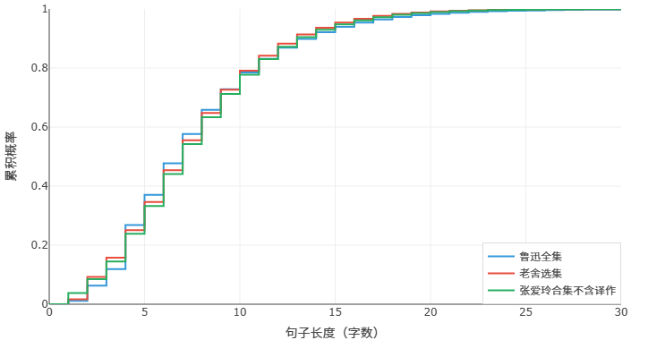
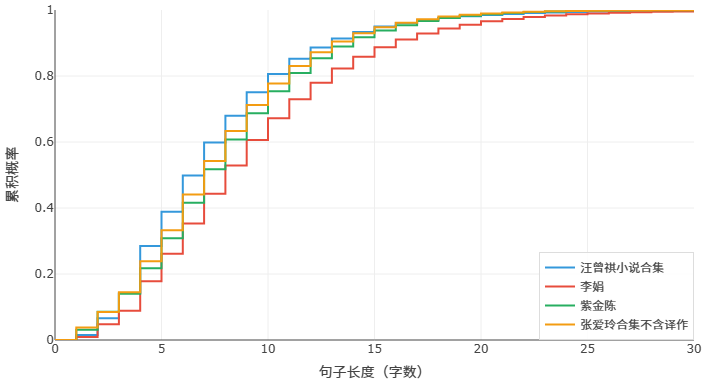
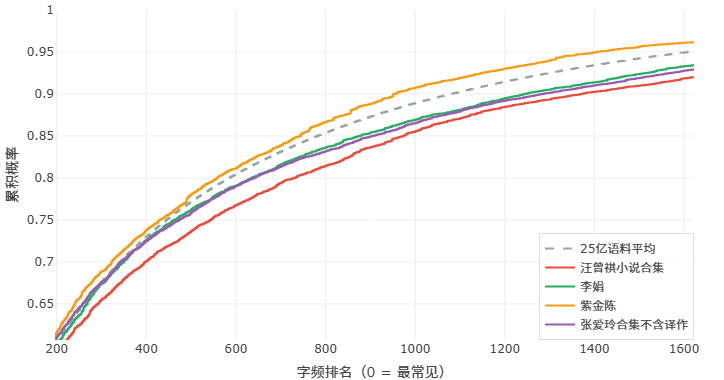

文無第一？盛名之下的數據！
有一個觀點，說出來可能會得罪人，但我還是想說：把句子寫短這件事，其實相當考驗一個人的語感和智力。
有些人聽到這裡就不高興了。他說，寫短句有什麼難的？誰還不會寫短句啊？你看，我，現在，就可以，很短。
沒錯，把句子強行掰碎，誰都會。但那種短句讀起來是什麼感覺？是一瘸一拐，是上氣不接下氣，是人為製造的、笨拙的頓挫。真正的短句，不是靠句號硬切出來的——它是自然的、流動的、三五字自成一句，讀起來輕快、乾淨，像呼吸一樣。蘇軾誇文章「如行雲流水」，行雲流水哪有長句當道、臃腫不堪的道理？能把句子寫得又短又自然的人，對語言的掌控力一定是一流的。
空口無憑，我們拿數據說話。下面是我們用寫作風格分析器對幾位作家的文本做的一組對比。看圖之前先說明一下：第一張圖是句子長度分佈——柱子越靠左，說明短句越多；第二張圖是詞頻分析（中文這裡用的是字頻）——它反映的是用詞的豐富程度，越靠左，文章裡的常用字詞越多，則越不夠豐富。
第一組：魯迅 · 老舍 · 張愛玲
這三位，大概是中國現代文學史上繞不過去的三座大山。把他們的合集找來，放進分析器裡跑了一遍。結果如下：


先說句子長度。魯迅先生句子最短，乾脆利落。但要知道他其實是一個非常激進的先鋒作家、改革派作家，他是不介意把所謂的歐化語法引入中文的，為此他在那個年代沒少被蛐蛐。但好笑的是，即便這樣，他寫的句子也比別人短，也比別人更有中國的味道。這就是他強大古文功底的體現。老舍先生的句子相對最長，他寫北京，寫市井，寫人情世故，句子綿長而有煙火氣，讀起來像在胡同裡遛彎兒。張愛玲先生居中，不長不短，她那種冷眼旁觀的語調，既不需要魯迅式的短促擊打，也不需要老舍那樣的鋪排展開。
再看用詞豐富度。魯迅先生又是第一——用詞最為豐富，詞彙量覆蓋範圍廣，極少重複使用高頻詞。這說明什麼？說明他的短句不是「詞彙貧乏所以只能說那麼少」，而是「詞彙多到可以精準地挑出最合適的那一個」。老舍先生用詞相對最簡單，平實、口語化，這也是他接地氣的風格使然。
有意思的是，這三位在一般人看來的排名，經常是魯迅最前，老舍最後，張愛玲居中——數據與「咖位」高度吻合。我們不是說數據決定一切，但這個相關性也確實耐人尋味。
第二組：把魯迅換成汪曾祺
現在我們把魯迅先生拿掉，換一個人進來——汪曾祺。
普通讀者可能對汪曾祺沒有那麼熟悉，他的名字不如老舍、張愛玲那樣「出圈」。但在作家圈子裡，汪曾祺一直被視為某種頂峰的存在。尤其是他的短句——可以說，整個中國現當代文學史上，幾乎找不出第二個人像他那樣大規模地、持之以恆地寫短句。
他的短句有時候短到讓你驚訝：還能這樣寫？三兩個字，一個句號。再三個字，又一個句號。你剛想說「這會不會太碎了」，讀下去卻發現流暢得不得了，像小溪淌水，叮叮咚咚的。這不是「掰碎」，這是真功夫。
來看數據：


句子長度上，汪曾祺的短句比例壓倒性地高，比之前排第一的魯迅還要短。用詞豐富度也非常高——短句並沒有犧牲詞彙的多樣性。
汪曾祺西南聯大出身，師從沈從文。沈從文自不必說，比肩魯迅的文學大師，文字乾淨如水墨畫。而在他之前，汪曾祺自小還跟隨著老一輩的文人學習桐城派古文，打下堅實而正宗的古文基礎。得諸真傳，又加入了自己的煙火氣，汪老才能把「短」寫到了另一種境界。
第三組：當代兩位流行作家
前兩組看的是經典，第三組我們把目光拉回到當下。我們選了最近幾年最火的兩位作家，同樣用分析器跑了一遍。結果如下：


可以看到，和老一輩的作家比，現代的作家句子可以一下子變很長（把更多作家也拉進來會發現這是個普遍現象，但那樣圖像就不好分辨了），而字詞豐富度可以追平，稍加思考會發現這都好理解。具體的我們下一篇再聊，這裡只想先指出一點——用本網站做比較的時候，一定要嚴格控制變量。只有知道你要的是什麼，才能得到有意義的結果。